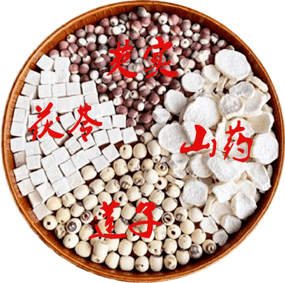
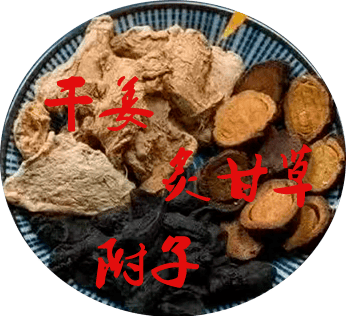
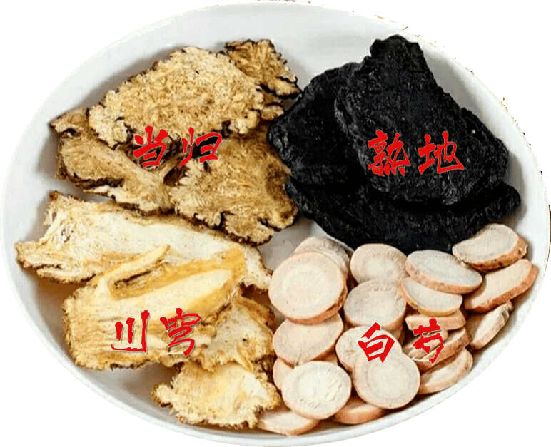
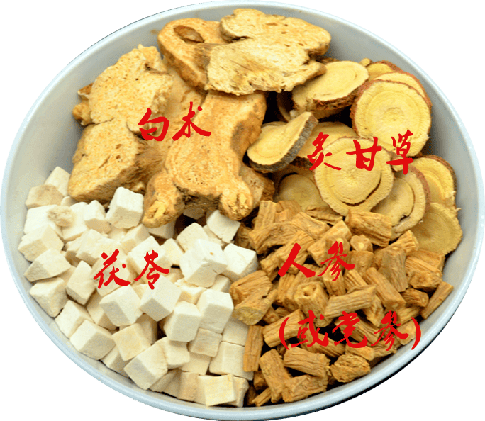

知识图谱
Zhī Shí Tú Pǔ · TCM Knowledge Graph
Entities and Relations
A modern TCM knowledge graph integrates millions of records from herbal databases, prescription compendiums, and biomedical sources. Below is a curated, browsable subset organised by the same entity types used in research-grade graphs.
当代中医知识图谱可将本草数据库、方剂典籍与生物医学资料中的数百万条记录整合为一体。下方为按学术级图谱所用之实体类别组织的精选子集，以便浏览。
The TCMM graph (released by the AI-HPC research team) integrates six TCM and biomedical databases into a unified knowledge structure. Its taxonomy is the foundation for the entity browser below.
由 AI-HPC 团队发布之TCMM知识图谱，将六种中医与生物医学数据库整合为统一知识结构。其分类体系即下方实体浏览器之基础。
性Property — Pharmacological nature
The thermal/energetic nature a substance imparts: hot, warm, neutral, cool, cold.
药物所赋之寒热温凉之性：热、温、平、凉、寒。
味Flavour — The five tastes
Each flavour acts on a specific organ system and produces a characteristic effect.
五味各入一脏，各有其用：酸入肝、苦入心、甘入脾、辛入肺、咸入肾。
归经Tropism — Channel-tropism
Which of the twelve meridians a substance preferentially enters and acts upon.
药物所偏入与作用之十二经脉。
本草Medicinal Materials — Curated by hour
Herbs supportive to each meridian during its peak window. Educational reference only.
各经当令时辰所宜之本草。仅供学习参考。
证候Common Syndromes — Per meridian
Patterns of imbalance traditionally associated with each organ system.
各脏腑经络常见之失调证候。
中医四大名汤The Four Great Classical Soups
Four millennia-tested formulas, each with a distinct "personality" — used correctly they're a cornerstone of household TCM, used wrongly they backfire. Hover any ingredient for its glossary card.
四神汤、四逆汤、四物汤、四君子汤——千年临床验证之四大名方。每剂自有性格，对症则妙，错用反害。鼠标悬停任一组成药材可阅其本草释义。
🌿
四神汤
Sì Shén Tāng — Four Spirits Soup
健脾祛湿黄金方

- Composition
-
茯苓 ·
芡实 ·
莲子 ·
山药
(常加
薏仁)
- Mnemonic
- 山莲芡茯 (first char of each herb)
- Action
- Strengthens the Spleen, drains dampness, tonifies the Kidney, stops diarrhea, calms the spirit. The "diligent housekeeper" of the digestive tract.
- 像勤劳的「脾胃清洁工」——健脾祛湿、补肾止泻，兼宁心安神。
- Suits
-
- ✅ Damp signs (greasy tongue coat, body heaviness, sticky stool)
- ✅ 湿气重：舌苔厚腻、身体困乏、大便黏腻
- ✅ Weak Spleen (poor appetite, bloating, indigestion)
- ✅ 脾胃弱：食欲差、腹胀、消化不良
- ✅ Sub-health (chronic late-nighters, sedentary office work)
- ✅ 亚健康：熬夜党、久坐族日常调理
- Use
- Four-Spirits Congee (with rice, breakfast) · Four-Spirits Pork-Tripe Soup. 2-3× per week, long-term.
- 四神粥（药材+大米熬煮，早餐）· 四神猪肚汤（药材与猪肚同炖）。每周 2-3 次，长期效佳。
❄️
四逆汤
Sì Nì Tāng — Four-Reverse Decoction
回阳救逆急救方

- Composition
-
附子
(生食有毒 · raw is TOXIC) ·
干姜 ·
炙甘草
- Name
- "Four reverses" = the four cold limbs. The formula warms them back.
- 「四逆」指四肢厥冷；此方回阳救逆，使四肢复温。
- Mnemonic
- 附草姜 · 「四逆汤中附草姜，阳衰寒厥急煎尝……」
- Action
- A "miniature sun" inside the body — rapidly rouses Yang qi and disperses interior cold.
- 堪称「人体小太阳」，迅速振奋阳气，驱散体内阴寒。
- Suits
-
- ⚠️ Only for collapsed yang: ice-cold limbs, profuse cold sweat, faint pulse
- ⚠️ 仅限阳气暴脱者：四肢冰冷、冷汗淋漓、脉微欲绝
- ⚠️ Adjuvant in acute gastroenteritis, shock, and similar emergencies
- ⚠️ 常用于急性肠胃炎、休克等危急症之辅助治疗
- Cautions
-
- ❗ NOT for non-deficient-cold patients
- ❗ 非虚寒体质禁用
- ❗ 附子 must be long-decocted to detoxify — practitioner-only
- ❗ 附子须久煎去毒，必须严格遵医嘱，自行乱用可能中毒
🌸
四物汤
Sì Wù Tāng — Four Substances Decoction
妇科养血圣方

- Composition
-
当归 ·
川芎 ·
白芍 ·
熟地
- Mnemonic
- 归芎芍地 (first char of each herb)
- Action
- Tonifies and moves blood; regulates menstruation; stops pain. Known as "the first formula of gynecology" (妇科第一方).
- 补血活血、调经止痛——「妇科第一方」。
- Suits
-
- ✅ Blood deficiency in women: pale complexion, dizziness, insomnia, vivid dreams
- ✅ 女性血虚：面色苍白、头晕眼花、失眠多梦
- ✅ Menstrual disorders: scant flow, amenorrhea, dysmenorrhea, dark-red color
- ✅ 月经不调：量少、闭经、痛经、经色暗红
- Modifications
- Heavy blood stasis: add 桃仁 + 红花 (stronger circulation). Marked blood deficiency: heavier 熟地 + 当归.
- 血瘀重：加桃仁、红花增强活血。血虚明显：重用熟地、当归。
- Timing
- Best taken for 3–5 consecutive days after menses end.
- 月经结束后连续服用 3-5 天，效果最佳。
🧡
四君子汤
Sì Jūn Zǐ Tāng — Four Gentlemen Decoction
补气健脾第一方

- Composition
-
人参
(或
党参) ·
白术 ·
茯苓 ·
炙甘草
- Name
- All four herbs are mild and balanced — like 君子 (gentlemen).
- 四味药性平和，如同「君子」。
- Short name
- 四君汤 (first two chars of 四君子)
- Action
- A gentle qi-tonic — like recharging the Spleen-Stomach battery; strengthens digestion and absorption.
- 温和补气，像给脾胃「充电」，增强消化吸收能力。
- Suits
-
- ✅ Qi-deficient constitution: shortness of breath, fatigue, sweating on exertion
- ✅ 气虚体质：气短懒言、易疲劳、动则出汗
- ✅ Post-surgery / postpartum weakness, poor appetite
- ✅ 术后/产后：虚弱乏力、食欲不佳
- Use
- Tea decoction (boil the herbs, drink as tea) · Four-Gentlemen Steamed Chicken (steam the herbs with chicken).
- 代茶饮（药材煮水当茶）· 四君子蒸鸡（药材与鸡肉同蒸）。
— compiled from classical 中医方剂 references; 中医方剂网
——参考中医方剂网